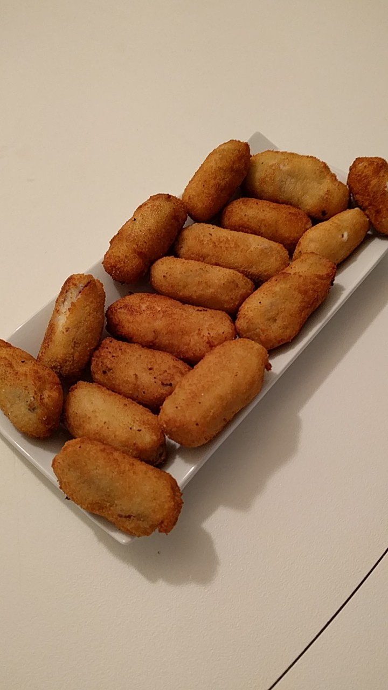

Se calienta la leche en un cazo mientras se dora la cebolla cortada fina en la olla a usar. Se añade mantequilla, se derrite y se añaden los ingredientes. Añadimos 5,5 cucharadas colmadas de harina. Se remueve y se hace el roux tostando la harina. Echamos leche poco a poco. Remover y probar sal.
#Recetas
